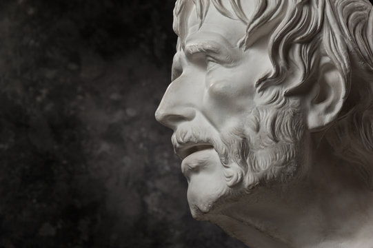

Hayat, zorluklarla dolu bir yolculuktur. Ancak bu zorluklar, büyüme ve olgunlaşma fırsatlarını da beraberinde getirir.
Nietzsche'nin "Beni öldürmeyen şey, beni güçlendirir" sözü, bu durumu özetler.
Zorluklar, içsel gücümüzü keşfetmemize ve direncimizi artırmamıza olanak tanır.
Zorluklar, hayatın şiirinde güçlü dizelerdir. Her bir engel, hayatın derinliğini ve güzelliğini daha iyi anlamamıza yardımcı olur. Tıpkı bir şiirin en dokunaklı mısralarının, en derin duygularla yazıldığı gibi, zorluklar da hayatımıza anlam ve derinlik katar. Zorluklarla karşılaştığınızda, onları birer fırsat olarak görmek ve her engelin ardında saklı olan güzelliği keşfetmek, yaşam yolculuğunuzu daha anlamlı kılacaktır.
